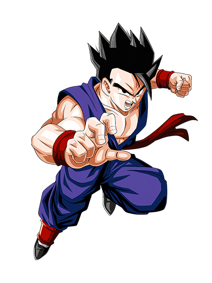

Soy gohan el super sayayin
Son Gohan (孫 悟 飯) es un personaje ficticio de la serie de manga Dragon Ball, creada por Akira Toriyama. Gohan es presentado como el primer hijo del protagonista Goku y su esposa Chi-Chi. Hace su primera aparición en el capítulo # 196 Kakarrot (カ カ ロ ト Kakarotto), publicado por primera vez en la revista Weekly Shōnen Jump el 8 de octubre de 1988.
- Mono Gigantesco.
- Supersaiyano de Primer Grado.
- Supersaiyano al Máximo Poder.
- Supersaiyano 2.
- Estado Definitivo.
- Formas posesionadas o impuras. 4.6.1 Baby Gohan.
- Baby Son Gohan Super Saiyan Base.
